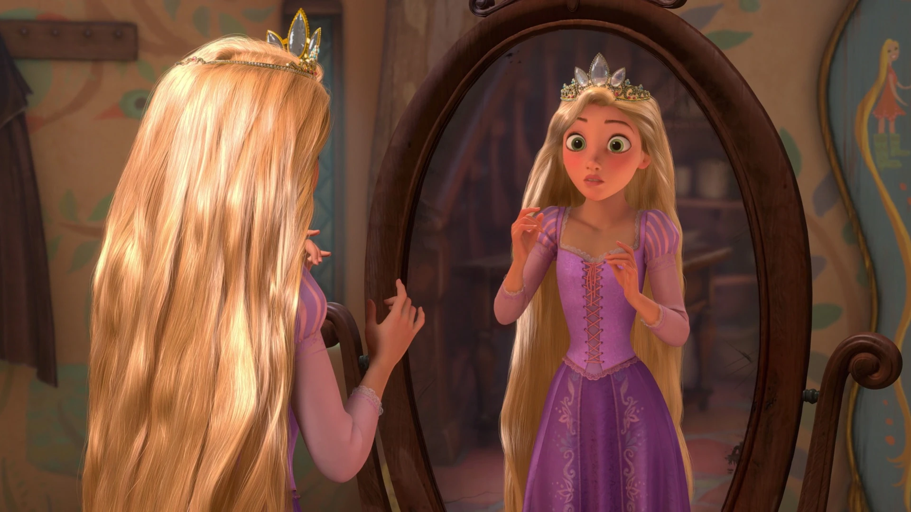

My First Blog
Today I started learning HTML and learned how to use a few simple tags can create structured and beautiful web pages!
Hello everyone , my name is Ishika Gupta. I am passionate about technology, designing, and learning how the web works.
Visit Google to search for anything!

My favorite hobby is dancing and doing arts & crafts. It helps me relax and express my emotions through using my creativity.
I love exploring new technologies.
I also enjoy writing about what I learn.
"The best way to predict the future is to invent it." – Alan Kay
Learning web development is exciting and rewarding! (Updated recently)
Always believe in yourself and keep moving forward no matter what.
To print a message in JavaScript, use:
console.log("Hello World");
[Idea] Creativity drives innovation. [Action] Effort makes it real. [Result] Success follows persistence.
Life is full of adventures and
learning moments.
Always stay curious. (Keep exploring!)
I’m a student exploring web technologies and digital creativity. I enjoy combining art and code to create meaningful projects.
Today I started learning HTML and learned how to use a few simple tags can create structured and beautiful web pages!